Computational design of constitutively active cGAS
Introduction
Cyclic GMP-AMP synthase (cGAS) is a pattern recognition receptor critical for the innate immune response to intracellular pathogens, DNA damage, tumorigenesis and senescence. Binding to double-stranded DNA (dsDNA) induces conformational changes in cGAS that activate the enzyme to produce 2′-3′ cyclic GMP-AMP (cGAMP), a second messenger that initiates a potent interferon (IFN) response through its receptor, STING. Here, we combined two-state computational design with informatics-guided design to create constitutively active, dsDNA ligand-independent cGAS (CA-cGAS). We identified CA-cGAS mutants with IFN-stimulating activity approaching that of dsDNA-stimulated wild-type cGAS. DNA-independent adoption of the active conformation was directly confirmed by X-ray crystallography. In vivo expression of CA-cGAS in tumor cells resulted in STING-dependent tumor regression, demonstrating that the designed proteins have therapeutically relevant biological activity. Our work provides a general framework for stabilizing active conformations of enzymes and provides CA-cGAS variants that could be useful as genetically encoded adjuvants and tools for understanding inflammatory diseases.
The ability to induce a controlled and robust innate immune response is highly desirable for prophylactic and therapeutic immunopotentiation. The cGAS-STING pathway [1][2][3][4][5][6] has rapidly become a promising target, with numerous small-molecule STING agonists in development, some of which have entered clinical trials 7,8 . However, several first-generation molecules suffered from low efficacy or adverse reactions 7,9 . With the recent clinical validation of multiple approaches to delivering biologics genetically 10,11 , biologic activators of the cGAS-STING pathway are now feasible and may provide an attractive alternative by offering more avenues to engineer activity, localization and regulation. Highly active cGAS mutants that lack inhibition deriving from chromatin tethering have recently been reported 12 . However, these variants still require the dsDNA ligand for activation. We set out to develop a simple, multistate computational design protocol to engineer CA-cGAS variants that are ligand-independent. CA-cGAS could be a useful alternative therapeutic agent or research reagent because its activity would not depend on factors such as the cell cycle, subcellular localization or disease state. The tumor regression caused by intratumoral injection of nuclease-resistant, modified STING agonists [13][14][15] suggests a potential therapeutic application for CA-cGAS delivered as a biologic.
cGAS is the eponymous member of the cGAS-like receptors, a conserved group of metazoan proteins responsible for double-stranded nucleic acid surveillance in the cytosol 16,17 . cGAS-like receptors are characterized by an extended N-terminal α-helix, designated the 'spine', Article least two strands of dsDNA in roughly parallel orientation, forming extended DNA-protein complexes 20,21,23,24 . One dsDNA strand makes extensive contacts along the spine helix, NTase core and C-domain, whereas the other dsDNA strand only contacts the NTase core. Multiple structural studies have shown that recognition of dsDNA initiates three changes within the cGAS structure: (1) a break forms in the spine helix (residues 158-161 in mouse cGAS (mcGAS)), (2) the dynamic active site loop (residues 196-210) becomes more ordered such that it no longer occludes the active site, and (3) the NTase-core domain moves ~3.8 Å closer to the C-domain 19,20 . Figure 1b shows a view of the active and inactive conformation with cylindrical helices to visually accentuate these changes. The cGAS-DNA complex also contains cGAS-cGAS contacts, and activation by short dsDNA fragments forms cGAS dimers 20,23 . The sequence of these events and the necessity of each for activation are not fully understood. In contrast to these rearrangements between DNA-free and DNA-bound cGAS, elegant crystallographic studies suggest no significant structural changes during catalysis 25 . These observations indicate that the DNA-bound conformation can be considered the enzymatically active conformation.
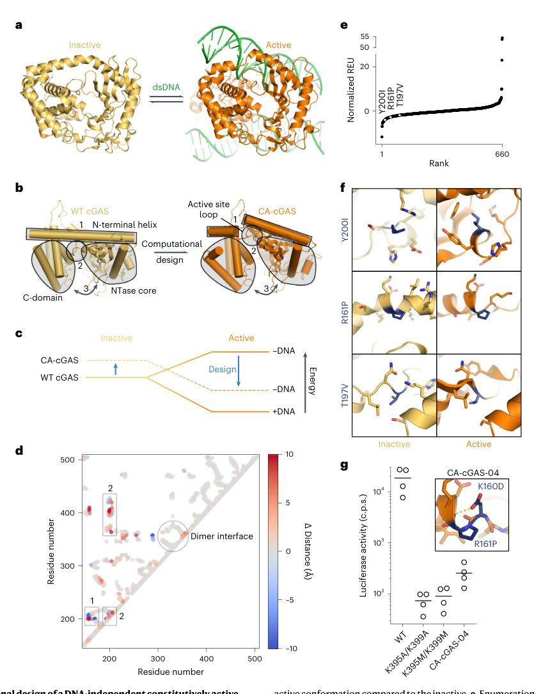
We hypothesized that mutations which stabilize the dsDNA-bound (active) conformation or destabilize the unbound (inactive) conformation would shift the conformational equilibrium of the enzyme towards the active state, an outcome usually achieved by dsDNA binding. Unlike the rearrangements caused by dsDNA binding, the energetic effects of such mutations would be intrinsic to the designed protein, leading to constitutive, dsDNA-independent enzymatic activity (Fig. 1c). We developed a two-state design approach to identify such mutations and generate CA-cGAS variants. The typical protein design approach seeks to optimize the protein sequence for a single target structure, while disregarding or imperfectly approximating the vast space of all other possible states 26,27 . By contrast, multistate design seeks to optimize the protein sequence for or against multiple conformations simultaneously. A generalized solution to multistate protein design that contrasts multiple conformations has been developed, but is complex to use and computationally intensive 28 . Here, we developed a simple, knowledge-based two-state design protocol that can be generally applied to stabilize specific conformations of dynamic proteins where target and off-target structures are known. We augment this approach with bioinformatics-inspired mutations derived from proteins with highly divergent sequences and functions that nevertheless retain strongly conserved structural features that closely match the target conformation.
Results
Results
To identify key residues involved in the structural rearrangements between DNA-free and DNA-bound conformations, we calculated a distance difference matrix between the DNA-bound (active; Protein Data Bank (PDB) ID 4K97) and -unbound (inactive; PDB ID 4K8V) forms of mcGAS. The matrix measures the change in distance for each Amino acid 157 158 159 160 161 162 164 165 166 167 168 169 170 196 197 198 199 200 201 202 203 204 205 206 207 208 209 210 cGAS residue number -1.00 (MiD51) Sequences originally from MSAs to cGAS are colored blue, sequences from MSAs to MiD51 colored orange. Sequences appearing in both MSAs colored brown d, The difference in position-specific amino acid frequency (heatmap) in the boxed regions highlighted in Fig. 2b, residues 157-179 in box 1 and 196-210 in boxes 2 and 3. The bars show the scaled entropy difference at each position. Positions excluded because of substrate interactions marked with an asterisk; positions of interest in black.
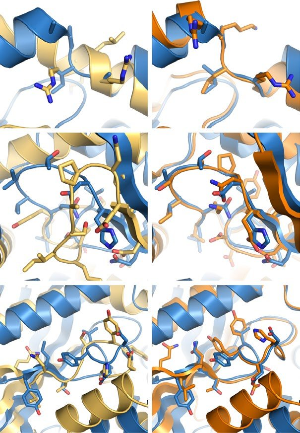
Article residue-residue pair in the two structures. Our analysis highlighted two regions that move significantly and are likely critical for cGAS activation: the spine helix above the active site that bridges the NTase core and C-domain (region 1, residues 155-170), and the active site loop and flanking beta strands (region 2, residues 196-214) (Fig. 1b,d). The dimer interface does not undergo any significant structural rearrangements (Fig. 1d).
To identify potential activating mutations in these regions, we evaluated the energy of all possible single amino acid substitutions in both the active and inactive conformations using Rosetta (660 mutations total) 29 . Mutations were ranked by taking the difference in the energetic impact of each mutation between the active and inactive states, where the energetic impact is defined as the difference between the wild-type (WT) energy and single-mutant energy for a given state (Fig. 1e). This score metric is the central feature of our two-state design approach, because it explicitly favors mutations that stabilize the active conformation, destabilize the inactive conformation or both. Accordingly, the top-scoring mutations generally fell into two categories: hydrophobic residues exposed to solvent in the inactive conformation and buried in the active conformation (for example, is fit with a linear regression. d, Initial reaction rates for WT cGAS and CA-cGAS ± dsDNA compared with CA-cGAS mutants without dsDNA. e, The effect of the presence of dsDNA on CA-cGAS activity. f, Salt dependence of WT cGAS and CA-cGAS-50 activity in the presence or absence of dsDNA. g, Activity of CA-cGAS-41 by ISRE assay after reverting one or both of the CA-cGAS-04 mutations to WT. In all plots bars represent the mean. Each assay was performed at least twice with similar results.
Article T197V and Y200I), or proline residues compatible with the backbone geometry of the active conformation but unfavorable in the inactive conformation (for example, R161P) (Fig. 1f). To generate candidate CA-cGAS designs, combinations of positions with favorable mutations were designed using Rosetta. Independent design trajectories either restricted the possible mutations at each position to those that scored well in the initial screen, or allowed them to mutate freely. We scored these variants in the same way as the individual mutations, and selected 45 designs containing between one and six mutations for experimental characterization (Supplementary Table 1). We screened the enzymatic activity of each cGAS variant in HEK293T cells, which do not naturally express cGAS, by transfecting each cGAS construct together with a STING expression vector and a luciferase-based IFN-stimulated response element (ISRE) reporter plasmid (Extended Data Fig. 1a-d). To ensure that any measured activity was due to constitutive activation of the enzyme and not activation by transfected plasmid DNA, we first knocked out cGAS activity by disrupting DNA binding through introduction of the previously published K395A/K399A mutations 19 and a similar pair of mutations, K395M/K399M. We selected the K395M/K399M mutations for screening variants because they retain packing interactions provided by the aliphatic portion of the native side chains that may be important for stabilizing the nearby active site loop. We confirmed that the K395M/ K399M double mutant was as inactive as K395A/K399A (Fig. 1g). The 45 best-scoring computationally designed variants were introduced into this K395M/K399M background. In the initial screen, the double mutant K160D/R161P (CA-cGAS-04) exhibited activity higher than the K395M/K399M mutant, but lower than WT cGAS (Fig. 1g). These mutations were intended to destabilize the inactive conformation by breaking the spine helix (R161P) and stabilize the active conformation by capping the helix spanning residues 161-182 (K160D).
Bioinformatics-directed refinement of CA-cGAS
To close the activity gap between CA-cGAS-04 and WT cGAS, we used a combination of bioinformatics and computational approaches. We reasoned that proteins with structural homology specific to the active conformation of cGAS may inspire additional active conformation-stabilizing mutations. We used Protein Data Bank in Europe 30 to search for distantly related proteins with structures closely matching the active conformation of cGAS, and then reviewed available structural and functional data to identify those that are not known to undergo large conformational changes. One protein that matched these criteria was MiD51, an ADP-binding mitochondrial receptor that facilitates mitochondrial fission and adopts the same structure in ADP-bound and unliganded crystal forms 31 . MiD51 contains an NTase domain that aligns well with active cGAS (1.96 Å Cα r.m.s. deviation) (Fig. 2a); although, like many proteins containing NTase domains, it is not an enzyme. The ADP binding site loop and surrounding areas align poorly with the inactive conformation of cGAS, but very well with the active conformation (3.54 Å and 0.34 Å Cα r.m.s. deviation, respectively; Fig. 2b). Despite this high structural similarity, MiD51 and cGAS have only 18% sequence identity across the aligned domains. Because cGAS undergoes large structural rearrangements upon DNA binding, whereas MiD51 appears to adopt a single static conformation, strongly conserved amino acid differences between the two protein families in cGAS regions 1 and 2 (Fig. 1d) may be related to the functional requirement for movement in cGAS. We hypothesized that mutating these positions in CA-cGAS-04 to the amino acids observed in MiD51-like proteins would further stabilize the active conformation or destabilize the inactive conformation.
To identify such mutations, we generated multiple sequence alignments (MSAs) of varying permissiveness for cGAS and MiD51 using the HHblits algorithm 32 . At low stringency many sequences appeared in both alignments, in keeping with the distant homology between the two proteins, but cGAS-like and MiD51-like clusters were apparent (Fig. 2c). Using a stringent E-value cutoff resulted in a cGAS-like MSA with 468 members and a MiD51-like MSA with 219 members, with no overlap (Fig. 2c and Extended Data Fig. 2). From these two MSAs we calculated the difference in amino acid frequency at each position, as well as a scaled entropy difference that highlights positions with strongly conserved differences between the two families (Fig. 2d). These data identified target positions and amino acid identities likely to stabilize the active conformation of cGAS. Within the regions specified for computational design, 19 positions have strongly conserved differences. The differences at several positions can be explained by the distinct binding or catalytic functions of MiD51 and cGAS or would not be expected to substantially affect cGAS conformational dynamics; these positions were excluded from further analysis. Ten positions remained: 158, 160, 161, 196, 197, 200, 205, 206, 207 and 209. Of these, residue 160 in mcGAS is a conserved lysine or arginine (combined p = 0.70) that binds dsDNA. This position is also conserved in MiD51, but as a proline (p = 0.70), which in cGAS would be expected to strongly disfavor formation of the spine helix observed in the inactive conformation, like the R161P mutation in CA-cGAS-04. Residues 196 and 200 in cGAS feature polar amino acids that are partially buried in the active conformation and solvent-exposed in the inactive conformation. Both positions are
Article hydrophobic and well packed in MiD51, suggesting that they may be useful for stabilizing the active conformation of cGAS. Based on this analysis, a second set of mutants was selected and cloned into the CA-cGAS-04 background.
In vitro activity of second-generation CA-cGAS
Four of these variants, containing primarily polar to nonpolar mutations (Fig. 3a), were constitutively active in the ISRE-luciferase assay (Fig. 3b). Eight hours post trans-fection, one variant (CA-cGAS-50) had near-WT levels of activity, whereas two others (CA-cGAS-22 and CA-cGAS-41) were approximately twofold lower and CA-cGAS-42 was just above baseline (Extended Data Fig. 3a). Eighteen hours post trans-fection, the activity of all four variants was near WT (Extended Data Fig. 3a).
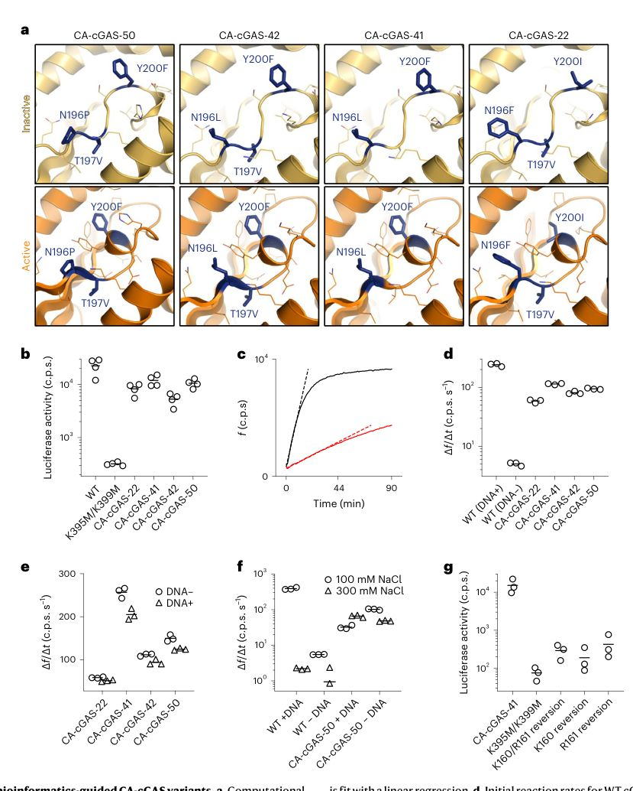
To further characterize these active variants, we expressed and purified the core catalytic domain of each (d147 CA-cGAS), ensuring that our preparations were free of nucleic acid (Extended Data Fig. 3b-d), and measured their enzymatic activity under a number of different conditions in vitro. Activity was determined by monitoring the change in 2-aminopurine riboside-5′-O-triphosphate (fATP) fluorescence during the cyclization reaction (Fig. 3b) 23 . The most active variant (CA-cGAS-41) was 21-fold less active than WT, and the relative levels of in vitro activity between the variants closely matched that observed by ISRE-luciferase assay in 293T cells (Fig. 3c). Critically, although WT cGAS activity was entirely dependent on the presence of dsDNA, CA-cGAS activity was not (Fig. 3c,d). Furthermore, WT cGAS activity is highly salt-dependent, likely due to disruption of dsDNA binding, whereas CA-cGAS activity is independent of salt concentration (Fig. 3e). Consistent with previous studies that identified 2′,3′-cGAMP as the major reaction product 2,33,34 , WT cGAS, CA-cGAS-41 and CA-cGAS-50 produced substantial 2′,3′-cGAMP in vitro, but did not produce detectable levels of 3′,3′-cGAMP (Extended Data Fig. 3e,f). We analyzed the ability of the CA-cGAS variants to bind dsDNA using two assays: electrophoretic mobility shift assays (EMSA) and size-exclusion chromatography (SEC). For the EMSA, we mixed truncated versions of WT cGAS and the CA-cGAS variants lacking the unstructured N-terminal domain with a 17 bp dsDNA fragment at varying molar ratios. For all proteins, no shift was observed until the molar ratio of protein to DNA reached 1:1, and complete shifting was not observed until a ratio of 10:1 (Extended Data Fig. 4a). We observed a consistent shift in retention time by SEC for both WT and CA-cGAS when incubated with excess dsDNA (Extended Data Fig. 4b), consistent with previous studies that identify oligomeric cGAS-dsDNA complexes as the enzymatically active form [21][22][23] . Together, these data suggest that although our CA-cGAS variants retain dsDNA binding in the presence of molar excesses of dsDNA, their enzymatic activity is independent of oligomerization state. Moreover, we confirmed there was no measurable difference in activity between the truncated (d147) and full-length forms of CA-cGAS in cells by the ISRE assay (Extended Data Fig. 4c). Finally, reverting the CA-cGAS-04 mutations at positions 160 and 161 to WT either individually or together completely eliminated constitutive activity of variant CA-cGAS-41, as measured by ISRE assay (Fig. 3g).
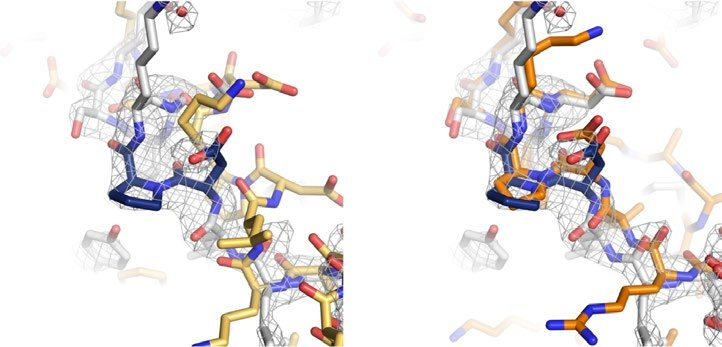
Structure of CA-cGAS in the absence of bound dsDNA
We solved structures of CA-cGAS-41 crystallized in the presence of GTP and CA-cGAS-50 without ligand to 2.18 and 2.60 Å resolution, respectively (Extended Data Fig. 5a,b and Table 1). Compared with the previously published inactive structure, the NTase cores of CA-cGAS-41 and CA-cGAS-50 were 3.6 and 3.5 Å closer to their C-domains, adopting structures consistent with the active conformation (Fig. 4a,b) 1 . The designed break in the spine helix in both structures (residues 158-161) also closely matched the active conformation as intended inactive conformation, defined as the change in position of the Cɑ of residue 279 (spheres), is also indicated. c, Detail of the CA-cGAS-41 and d, CA-cGAS-50 2F o -F c map (contoured at 1.0 sigma) and refined model (white) around residues 158-164 in the spine helix aligned to the spine helix of the inactive and active conformation design models. Mutations are labeled and colored dark blue. There was no clear density for the GTP ligand in the CA-cGAS-41 active site, and in both structures the active site loop was poorly resolved. In chain A of each asymmetric unit, where the density was slightly better, the active site loop did not clearly adopt either the inactive or active conformation (Extended Data Fig. 5c,d).
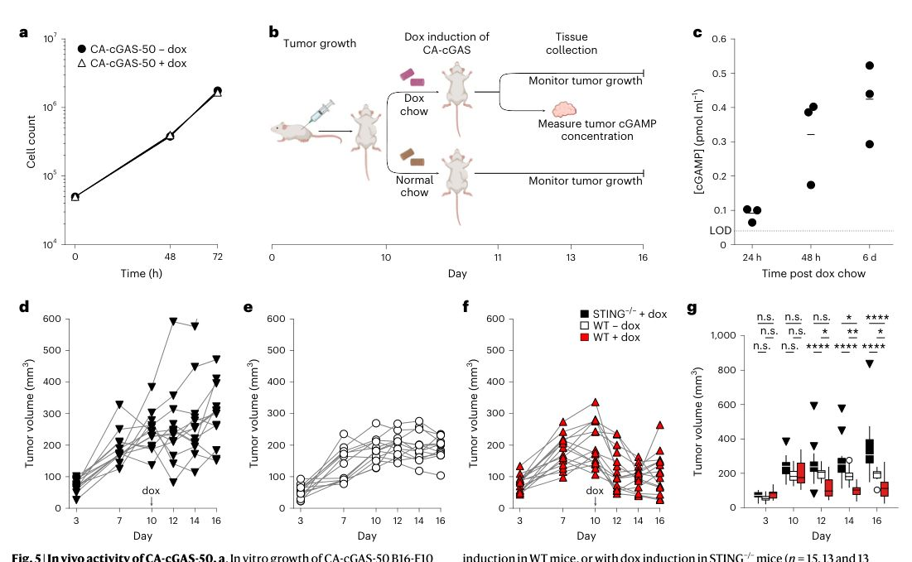
Overall, the conformation of both CA-cGAS variants strongly resembled the active conformation. To our knowledge, the only other structure in which cGAS adopted an active-like conformation in the absence of DNA was obtained when human cGAS (hcGAS) was co-crystallized with 2′,3′-cGAMP 25 .
In both structures the positions of the CA-cGAS-04 mutations (K160D and R161P) were consistent with the active conformation design model (Fig. 4c,d). However, the regions containing mutations unique to CA-cGAS-41 or -50 (residues 196-203) were in unexpected conformations involved in crystal contacts (Extended Data Fig. 5e,g) and had weaker electron density and higher B-factors than the rest of the protein. In the CA-cGAS-41 structure, the β-strand at residues 193-196 is instead a loop that peels away from the molecule starting at N196L and packs the backbone of G198 and S199, along with the side chain of Y201, against the spine helix of a second molecule in the asymmetric unit (Extended Data Fig. 5f). In the CA-cGAS-50 structure mutant Y200I and WT residue Y201 also make crystal packing contacts that change the conformation of this region (Extended Data Fig. 5h). This result is not surprising considering that residues 196-203 form part of a dynamic loop and comprise up to four mutations. Nevertheless, these mutations strongly enhance CA-cGAS activity, suggesting that they contribute to stabilization of the active conformation in a way that is not captured by the crystal structures.
That only K160D/R161P are well-resolved in the expected conformation suggests that these mutations are primarily responsible for stabilization of the active conformation, which is consistent with the complete loss of ISRE activity when K160D and R161P are together reverted to WT. To explore alternative activating mutations in the spine helix, we also characterized a variant of CA-cGAS-41 containing the bioinformatics consensus mutations L159I/K160P/R161A. This variant is as active as CA-cGAS-41 (Extended Data Fig. 6a). However, K160P/ R161A in the same context is less active, and K160P alone is inactive. Additional mutations we predicted may alter CA-cGAS activity had little beneficial effect (Extended Data Fig. 6b,c).
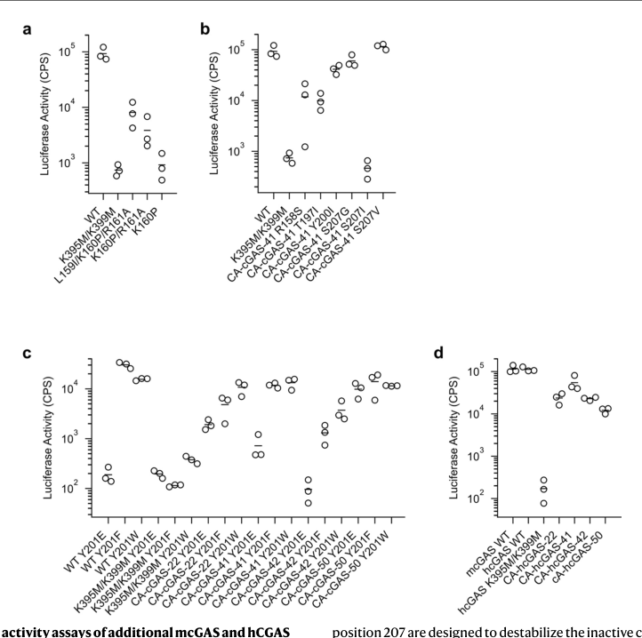
The local environments around regions 1 and 2 in cGAS are reasonably well conserved, which suggests activating mutations should generalize to cGAS from different species. Mutations from CA-cGAS-22, induction in WT mice, or with dox induction in STING -/-mice (n = 15, 13 and 13 mice, respectively
The box represents the median, upper and lower quartiles. The whiskers extend to the minimum and maximum data points within 1.5 times the interquartile range. Data points beyond that range are shown explicitly. Statistical analysis was performed using a two-way analysis of variance with Tukey's correction for multiple comparisons. n.s., not significant; *p < 0.5; **p < 0.01; ****p < 0.0001. At day 12: WT -dox versus WT + dox p = 0.0203, WT + dox versus STING -/-+ dox p < 0.0001; at day 14: WT -dox versus WT + dox p = 0.0031, WT -dox versus STING -/-+ dox p = 0.0264, WT + dox versus STING -/-+ dox p < 0.0001; at day 16: WT -dox versus WT + dox p = 0.0148, WT -dox versus STING -/-+ dox p < 0.0001, WT + dox versus STING -/-+ dox p < 0.0001.
Article
-41, -42 and -50 were introduced with K395M/K399M into hcGAS and activity was measured by ISRE-luciferase assay. All CA-hcGAS variants had near-WT activity (Extended Data Fig. 6d). Given that mcGAS and hcGAS share only 55% sequence identity, we expect that the sequence diversity observed in cGAS proteins from other species should have little impact on the effect of the activating mutations described here.
In vivo activity of CA-cGAS in a tumor model
To test the activity and therapeutic potential of CA-cGAS in vivo, we used the B16-F10 mouse melanoma model. Previous studies have shown that intratumoral injection of nuclease-resistant, modified 2′,3′ cyclic di-AMP causes tumor regression, and that this effect requires STING expression in the host, but not the tumor [13][14][15] . This approach is currently being evaluated in humans (NCT02675439 and NCT03172936). Instead of injecting immunostimulatory molecules, we sought to determine whether controlled expression of CA-cGAS could generate therapeutically relevant levels of cGAMP in the tumor itself. To do this, we created a clonal line of B16-F10 cells transduced with a lentivirus encoding doxycycline (dox)-inducible CA-cGAS-50. We found that dox-mediated induction of CA-cGAS-50 did not affect cell growth in vitro (Fig. 5a). We transplanted these cells into WT or Sting -/-mice and allowed the tumors to grow for 10 d before placing a cohort of the mice on dox-containing chow (Fig. 5b). We detected robust levels of cGAMP within tumors harvested from mice after dox induction (Fig. 5c). Moreover, we observed significant regression of tumors expressing CA-cGAS-50 in dox-treated WT mice, but not in dox-treated Sting -/-mice (Fig. 5d-g), demonstrating that CA-cGAS-50 expression in tumor cells was sufficient to activate STING-dependent immunity in surrounding host cells. Together, these data show that CA-cGAS-50 is functional in vivo and could be used as a genetically encoded adjuvant to stimulate anti-tumor immunity.
Discussion
Our results establish a general multistate design framework for stabilizing target conformations in structurally dynamic proteins. In brief, this framework has three steps: (1) identify target and nontarget conformations for the system in question; (2) enumerate all possible mutations in dynamic regions in both conformations to identify those with the largest energetic difference between the two states; and (3) combine top-ranked mutations with additional design and bioinformatics analyses based on conformation-specific homologs to identify supporting mutations and prioritize designs for experimental testing (Extended Data Fig. 7). Most current computational design methods typically explicitly consider only a single, static state, which is fundamentally inconsistent with the physical reality of proteins. This is especially true for enzymes and other dynamic systems, making these difficult targets for design. The computational design framework presented herein overcomes many hurdles in multistate design and should be applicable to other multistate protein design challenges. The observation that proteins with widely divergent sequences and functions can have strongly conserved structural features (as demonstrated here for cGAS and MiD51), coupled with recent breakthroughs in accurate structure prediction at the genomic scale 35,36 , should make our method widely applicable. Our method is also computationally inexpensive and effective even without consideration of possible unknown structural states, such as the unanticipated crystal contacts we observed in our structures. Our designed CA-cGAS variants establish that structural rearrangements alone, without dsDNA binding 19 , oligomerization 21,23 or liquid-liquid phase separation 37 , are sufficient for enzyme activity. Their independence of dsDNA binding and therefore the biological status of the cell (for example, infected versus uninfected) could make CA-cGAS molecules useful tools for better understanding the biological role of the cGAS-STING pathway in various tissues. Finally, our demonstration that induction of CA-cGAS-50 resulted in STING-dependent tumor regression in vivo establishes CA-cGAS molecules as biologic alternatives to small-molecule STING activators with potential prophylactic and therapeutic applications in infectious disease and cancer.
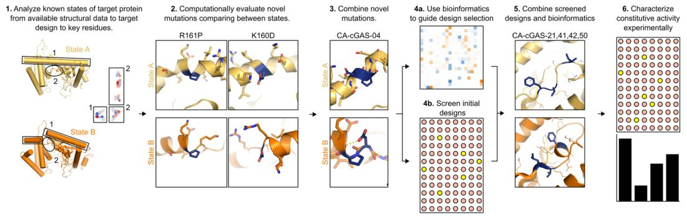
Online content
Any methods, additional references, Nature Portfolio reporting summaries, source data, extended data, supplementary information, acknowledgements, peer review information; details of author contributions and competing interests; and statements of data and code availability are available at .
Methods
Structures of mcGAS in the active (PDB ID 4K97) and inactive (PDB ID 4K8V) conformations were downloaded from RCSB. The residue-residue distance difference matrix was generated by calculat- ing the alpha-carbon or side chain heavy atom distances for the active and inactive conformations. The difference is the inactive conforma- tion residue-residue distance subtracted from the active conformation residue-residue distance. To prepare the PDB files for computational design, all heteroatoms and DNA atoms were removed. For PDB 4K8V all chains except chain A were removed. The Rosetta computational design methodology (v.3.1) was used to introduce point mutants at every residue in regions of the enzyme that undergo putatively relevant conformational changes during activation. Each residue was mutated to every other residue and any residues in a 10 Å sphere were allowed to repack (sample rotamer conformations) to accommodate the mutation. The entire pose was then minimized, but backbone atoms were constrained outside a 15 Å sphere around the target residue. This protocol was applied to both the active and inactive conformation. The difference in total energy in Rosetta energy units (REU) was calculated for the mutant and WT active conformations (dActive), and for the mutant and WT inactive conformations (dInactive). The difference between dActive and dInactive (normalized REU) was used to rank order mutants. A mutant with negative normalized REU should bias the structure towards the active conformation. The best-scoring single mutants were combined or improved by either allowing any other site where a beneficial mutation was observed to mutate to one of those beneficial mutations or allowing design to any residue at those sites. Designs were scored as described above.
Bioinformatics
We also took a bioinformatics approach to identify likely variants. First we searched the PDB for cGAS structural homologs that had low sequence conservation using the protein structure comparison service PDBeFold at the European Bioinformatics Institute, paying close attention to the alignment of the active site and dynamic regions identified in cGAS. We then performed a literature search for information about the biochemistry of hits, looking specifically for a protein that did not undergo structural rearrangements, and identified a suitable protein, MiD51 (PDB ID 4OAF). Using MiD51 and cGAS sequences excluding the unstructured N-terminal domain as inputs, we generated two overlapping MSAs using the HHblits algorithm (hhsuite v.3.0-beta3) with a high e-value cutoff. We then combined the two alignments and calculated bit scores for cGAS and MiD51. We clustered the bit score from alignments to cGAS and MiD51 using a Gaussian mixture model with Dirichlet process. We then generated MSAs with increasing e-value cutoff until there was no overlap between the cGAS MSA and MiD51 MSA, resulting in MSAs containing cGAS-like and MiD51-like proteins. We calculated the site-specific amino acid frequencies for each group, and the frequency difference between groups. To evaluate the magnitude of the differences in site-specific amino acid frequencies we calculated the divergence. The site-specific amino acid frequency divergence between cGAS and MiD51 MSAs was calculated from the site-specific entropy S = ∑pa × log 2 (pa) . The divergence was then calculated according to D = √H mixed where H mixed is calculated from the average frequency where pa is the site-specific amino acid frequency. By calculating the difference in site-specific amino acid frequency between cGAS-like and MiD51-like proteins, we could identify key regions and mutations that were likely to explain the difference in function between the two proteins, specifically the presence or absence of a conformational change. Using those data we combined sets of single mutations to make constitutively active cGAS variants for experimental testing. Some heuristics were applied when selecting design variants for experimental testing, such as minimizing distance in primary structure between mutations to facilitate primer design for Kunkel mutagenesis. Structural alignments between MiD51 and cGAS were generated in PyMOL with the 'super' command applied to the full structure, or for details, by local alignments. The spine helix alignment was made between cGAS (4k97) residues 158-161 and MiD51 residues 148-151. The active site loop alignment was made between cGAS residues 194-203 and MiD51 residues 184-193. The inactive conformation of cGAS (4K8V) was then aligned to the active conformation to compare MiD51 with inactive cGAS.
Plasmid preparation
The sequences for mcGAS (UniProt: Q8C6L5) and hcGAS (UniProt: Q8N884) were optimized for expression in mammalian cells and purchased as synthetic gBlocks from IDT. The gene fragment was amplified using Phusion polymerase per the manufacturer's instructions with primers incorporating homology regions for the 5′-or 3′-ends of the target cut vector (pCDNA3, pET28b or pCDB179) and for the gBlock. For pCDNA3.1 and pET28b vectors the primers were homologous to the 5′-and 3′-ends of the gBlock. In some applications, the sequence for a myc tag (GAACAGAAACTGATTAGCGAAGAAGAT) was included in the antisense primer. For pCDB179, the sense primer was homologous for the 3′-end of the cut vector, and for the 436-454th base pairs in the gBlock, corresponding to a truncation at the 148th amino acid. Because cloning into pCDB179 introduces a SUMO domain on the N terminus of the protein and the 148th amino acid is a proline, a non-homologous serine codon (TCG) was added between the primer and gBlock homology regions. When the SUMO domain is cleaved from the peptide, the serine residue remains. Constructs with this truncation are referred to as d147 cGAS. The antisense primer was homologous for the 5′ cut end of the vector. The resulting amplicons were assembled with restriction-digested (NdeI and XhoI) pET28b, (XhoI and BamHI) pCDB179 or (XhoI and NotI) pCDNA3.1 using Gibson Assembly and transformed into chemically competent Escherichia coli DH5α cells (NEB). Colonies were verified by Sanger sequencing. To identify CA-cGAS, the ability to bind and be activated by DNA was first removed by introducing the mutations K395M and K399M into the WT sequence. The mutations were made by QuickChange site-directed mutagenesis. The resulting amplified plasmids were transformed into chemically competent E. coli DH5α cells (NEB) and colonies verified by Sanger sequencing.
Activating mutations identified by computational design were generated by site-directed mutagenesis using the Kunkel method. Single-stranded, uracilated plasmid was generated by transforming genes in pCDNA3 plasmid into chemically competent CJ236 cells and inoculating six colonies into 3 ml of LB medium with carbenicillin. Cultures were allowed to expand for 3-4 h at 37 °C, shaking at 200 r.p.m. before adding 3 × 10 9 plaque-forming units of M13K07 helper phage. After an additional 1 h the culture was expanded 1:50 and grown overnight at 37 °C, shaking at 200 r.p.m. Phage was isolated from the culture medium by first clarifying the medium and then pelleting the phage in 3.3% PEG 8000, 420 mM NaCl. Single-stranded DNA was harvested using a Qiagen Qiaprep M13 kit (catalog no. 27704). Oligonucleotide primers containing the desired mutation or mutations were obtained from IDT. Oligonucleotides were phosphorylated with T4 polynucleotide kinase (NEB) and diluted to an appropriate working concentration. Oligonucleotides were annealed to the single-stranded template by slowly lowering the temperature from 95 °C to 25 °C at 1 °C min -1 . The phosphorylated and annealed oligonucleotides were used to prime in vitro DNA synthesis, with T4 DNA ligase and T7 DNA polymerase (NEB). The product, double-stranded heteroduplex plasmid, was transformed into chemically competent E. coli DH5α cells (NEB). Colonies were verified by Sanger sequencing.
CA-cGAS genes were cloned from pCDNA3 to pCDB179 or pET28b+ by in vitro amplification with an appropriate set of primers containing homology for the target plasmid, and then Gibson assembled into cut vector. pET28b was cut with XhoI and NdeI. pCDB179 was cut with XhoI and BamH1. For crystallography and in vitro activity assays, a truncated d147 variant was cloned into pCDB179 with a single serine residue inserted between the C-terminal SUMO glycine and N-terminal P147 residue in cGAS. The serine residue facilitates cleavage during purification.
Cell-based ISRE assay
To screen likely constitutively active mutants, pCDNA3 plasmid containing the mutant cGAS gene was purified from chemically competent E. coli DH5α cells (NEB) using a Qiagen Miniprep kit. 293 T cells were seeded into 96-well flat bottom plates at 2.5 × 10 4 per well. Cells were transiently transfected with three plasmids containing mutant cGAS (5 ng per well), STING (20 ng per well) and luciferase under regulation by an ISRE (5 ng per well). The cells were incubated for 8-18 h before being lysed and luciferase activity assessed using the Luciferase Assay System (Promega, catalog no. E4550) according to the manufacturer's instructions.
Production and purification
cGAS mutants showing activity by ISRE assay were purified recombinantly from chemically competent E. coli T7 cells (NEB). A small culture of TB with kanamycin was inoculated and grown overnight at 37 °C. Cultures were then expanded 1:50 into 500 ml of TB with kanamycin in a 2 L baffled shake flask and grown to approximately OD = 0.6 at 37 °C, shaking at 220 r.p.m. Once the indicated cell density was achieved, expression was induced by the addition of IPTG at a final concentration of 1 mM. Expression proceeded for 18 h at 18 °C with shaking at 220 r.p.m. Cultures were harvested by centrifugation at 5,000g. for 10 min, and the supernatant discarded. The pellet was resuspended in lysis buffer (50 mM Tris pH 8.0, 300 mM NaCl, 20 mM imidazole, 1 mM PMSF, 1 mM DTT, 0.1 mg ml -1 DNAse and 0.1 μM RNase) and lysed at 4 °C by sonication with a probe sonicator at 70% power for 2 min or microfluidization with a single pass at 138 MPa. Lysate was clarified by centrifugation at 12,000g. for 30 min. Clarified lysate was further filtered through a 0.22 μm PVDF membrane before loading onto a 5 ml HisTrap HP (Cytiva Life Sciences) column. The column was washed with ~25 ml of running buffer (50 mM Tris pH 8.0, 300 mM NaCl, 20 mM imidazole, 1 mM DTT) at 3 ml min -1 and the protein eluted with a linear gradient from 0% to 100% elution buffer (50 mM Tris pH 8.0, 300 mM NaCl, 500 mM imidazole, 1 mM DTT) over 40 min. Protein elution was monitored by absorbance at 280 nm and purity estimated by monitoring absorbance at 260 nm.
To remove any bound dsDNA, the major elution fractions were pooled further purified by heparin affinity chromatography. Pooled fractions were diluted in 20 mM Tris pH 8.0 to bring the final NaCl concentration down to ~200 mM. For full-length cGAS constructs, the NaCl concentration must not drop below 200 mM, otherwise precipitation occurs. Truncated d147 cGAS constructs are more tolerant of low ionic strength. The diluted protein was then loaded onto a 5 ml HiTrap Heparin HP column (Cytiva Life Sciences). Nucleic acids were eluted by washing the column with 25 ml of wash buffer (20 mM Tris pH 8.0, 250 mM NaCl, 1 mM DTT), then the protein was eluted with a linear gradient from 0% to 100% elution buffer (20 mM Tris pH 8.0, 1,000 mM NaCl, 1 mM DTT) over 40 min. Elution was monitored by absorbance at 260 nm (nucleic acids) and 280 nm (protein).
For d147 cGAS constructs, the SUMO domain was cleaved with a custom Ulp1 variant produced as previously described 38 . The protein concentration was first estimated by absorbance at 280 nm. After correcting for scattering, the concentration was calculated based on the theoretical molar extinction coefficient, assuming all cysteine residues are reduced. One milligram of protease per every 100 mg cGAS was added directly to the pooled fractions from the heparin column, without modification of the buffer. The cleavage reaction was allowed to proceed overnight at 4 °C. The extent of cleavage was followed by SDS-PAGE. To remove SUMO, Ulp1 protease and uncleaved cGAS the entire reaction volume was loaded onto a 5 ml HisTrap HP column and the flow-through collected. The column was then washed with 25 ml of running buffer at pH 7.5 and protein elution was monitored at 280 nm. The major wash fractions were pooled with the flow-through.
Full-length or cleaved d147 cGAS constructs were further purified by SEC. Nickel or heparin affinity eluates were pooled and concentrated in a spin concentrator to ~1 ml volume or a final concentration of ~20 mg ml -1 , whichever was larger. One-milliliter aliquots were injected onto a Superdex 75 10/300 GL column. For d147 cGAS constructs, the column was equilibrated and run with low-salt SEC buffers (20 mM Tris pH 7.5, 100 mM NaCl, 1 mM DTT). If the protein was to be frozen for storage, the buffer included 250 mM glycine and 5% v/v glycerol, except for d147 WT and d147 K395M/K399M cGAS, which was eluted in low-salt SEC buffer, without glycine. Full-length constructs were eluted into low-salt SEC buffers. Again, if the protein was to be frozen, it was eluted in buffer with 250 mM glycine and 5% v/v glycerol, except WT and K395M/K399M cGAS, which was always eluted in high-salt (300 mM NaCl) SEC buffer. Full-length constructs eluted at 10.8 ml, and d147 constructs eluted at 12.6 ml. Major fractions were pooled and quantified by absorbance at 280 nm. Presence of DNA was evaluated by 260/280 nm ratio. Protein identity and purity was confirmed by SDS-PAGE, LC-MS and UV-Vis spectroscopy. Constructs were frozen by diluting in SEC buffer to an appropriate concentration and aliquoting into cryo-safe tubes. Tubes were flash frozen in liquid nitrogen and stored at -80 °C.
In vitro cGAS activity assay
In vitro cGAS activity was determined using the method previously reported by Andreeva et al. 23 . Activity was measured by combining 1 μM cGAS, 500 μM GTP and 50 μM fATP (Biolog) with or without 2.6 ng μl -1 plasmid dsDNA. The reaction was initiated by spiking in 5 mM MgCl 2 . The fluorescence intensity of fATP was monitored for 3 h at 32 °C on a Synergy Neo2 plate reader (Biotek), with λ ex = 305 nm and λ em = 363 nm. As cGAS converts GTP and fATP into cyclic GMP-fAMP, the fluorescence intensity decreases. The fluorescence intensity was normalized to a buffer-only sample with 50 μM fATP. The initial rate was fit with a linear model.
2′,3′ cGAMP and 3′,3′ cGAMP production in vitro were measured by competition ELISA (Arbor Assays 2′,3′-cyclic GAMP ELISA Kit, catalog no. K067-H5W; and 3′,3′-cyclic GAMP ELISA Kit, catalog no. K073-H5W) per the manufacturer's instructions. 2′,3′ cGAMP was produced by incubating 1 μM cGAS with 5 μM MgCl 2 , 100 μM GTP and ATP, or only 200 μM ATP. For WT cGAS, 2.6 ng μl -1 plasmid dsDNA was included in the reaction mixture, but not for CA-cGAS reactions. The reaction was allowed to proceed for 90 min at 37 °C before adding 1 μl Benzonase (>250 U μl -1 , Benzonase Nuclease, Sigma Aldrich) and incubating for an additional 30 min at 37 °C. All reactions were heat-inactivated at 95 °C for 10 min and clarified by centrifugation at 21,000g. for 10 min. Supernatant was split into 20 μl aliquots, flash frozen in liquid nitrogen and stored at -80 °C before ELISA analysis.
CA-cGAS-50 was crystallized by sitting drop vapor diffusion in 0.2 M potassium thiocyanate, 0.1 M Bis–Tris propane pH 8.5 and 20% PEG 3350 after 3 d at 20 °C. The crystals were soaked in 5% PEG 300 diluted in reservoir solution at 1.2× concentration, flash frozen and stored in liquid nitrogen. Alternatively, 10 mM MgCl 2 and 10 mM GTP were added to 142 μM CA-cGAS-41 and crystallized by sitting drop vapor diffusion in 0.45 M potassium thiocyanate, 0.1 M Bis–Tris propane pH 7.0 and 20% PEG 3350. Crystals formed rapidly and were looped after 3 d at 20 °C. Crystals were soaked in a 1.2× reservoir solution with 10% v/v diethylene glycol before being flash frozen and stored in liquid nitrogen. X-ray diffraction data were collected at the Advanced Light Source. Data sets were processed with XDS and merged with XSCALE (Version 14 February 2019). The crystal structure was solved by molecular replacement with PHASER using two copies of the active conformation design model. Iterative model building and refinement was done with the macromolecular graphics and model building tool Coot. Comparisons with the design model were made in PyMOL. The spine helix was aligned using the ‘align’ command, residues 147–157 and 162–180 of the design model were aligned with the same residues of the A chain in the crystal structure. Comparisons between CA-cGAS crystal structures and inactive (4k8v) or active (4k97) cGAS conformations were generated by aligning the A chains using the ‘super’ command.
mcGAS mut50 was cloned into the pSLIK vector as described 12 . Specifically, the pSLIK vector was cut with the enzyme AsiSI (NEB, catalog no. R0630s) and mcGAS mut50 was inserted using in-fusion cloning according to the manufacturer’s instructions (Takara, catalog no. 638911). PCR primers used for amplification of mcGAS were BG537 (TGATCACTAGGCGATCGCGCCACCATGGAAGATCCGCG) and BG538 (AGTCTTCCAATTGCGATCGCTCACAGATCTTCTTCGCTAATCA).
B16-F10 cells were maintained in DMEM supplemented with 10% FBS, 2 mM l-glutamine, 10 mM HEPES, 1 mM sodium pyruvate, 0.05 mM beta-mercaptoethanol, 100 IU penicillin and 100 μg ml −1 streptomycin (complete DMEM). A clonal line of parental B16-F10 cells was created by lentiviral transduction of a construct that constitutively expressed the mWasabi fluorescent protein fused to a nuclear localization signal and a peptide derived from ovalbumin (SIINFEKL). These cells were transduced with pSLIK CA-cGAS-50. Single clones were grown up and tested for expression levels of CA-cGAS-50. A clone with low basal cGAMP production and high inducible expression of CA-cGAS-50 was selected for further experiments. For quantification of in vitro cell growth and CA-cGAS-50 induction, doxycycline was used at 1 μg ml −1 in complete DMEM.
Mice Female C57BL6/J mice 6–8 weeks of age were purchased from Jackson Labs and allowed at least one week to acclimate before experiment initiation. STING KO mice (Tmem173 −/− ) were generated as described 39 and backcrossed to C57BL/6J 40 . All mice were maintained in a specific pathogen-free barrier facility at the University of Washington, and all experiments were done in accordance with protocols approved by the Institutional Animal Care and Use Committee of the University of
Washington (IACUC protocol no. 4190-01). Mice are housed with a light cycle of 14 h of light and 10 h of darkness with acceptable temperature and humidity ranges of 20 °C–26 °C and 30%–70% respectively.
Female C57BL6/J WT mice ( n = 28) or STING KO (Tmem173 −/− ) mice ( n = 13), both 9–13 weeks of age, were injected subcutaneously in the flank with 1 × 10 5 B16-F10 tumor cells mixed 1:1 with Matrigel Basement Matrix (Corning, catalog no. 354248) for a final injection volume of 100 μl. Tumor volume was calculated using the following formula: volume = short axis 2 × long axis × 0.523 (ref. 41 ). Mice receiving doxycycline were switched to doxycycline chow (Envigo, catalog no. TD.01306; 625 mg kg −1 irradiated) starting at 10–11 d post tumor implantation. Maximum total tumor burden allowed per mouse was 2,000 mm 3 and was not exceeded in this study.
Tumors were dissected out of the mice and cut into small pieces in 3 ml of dissociation buffer: 2.7 mg ml −1 Collagenase A (Sigma, catalog no. 110088793001), 23 U ml −1 DNase I (Sigma, catalog no. D4263-5VL), 2 mM CaCl 2 in 1× PBS. Tumors were then incubated at 37 °C with shaking for 30 min. Then 3 ml of termination buffer (2% FCS, 5 mM EDTA in 1× PBS) was added. Samples were then filtered through a 70 mm mesh strainer, washed twice in 1× PBS, and lysed in 200 μl RIPA buffer (150 mM NaCl, 1.0% NP-40 substitute, 0.5% sodium deoxycholate, 0.1% SDS, 50 mM Tris pH 8.0). Fifty microliters of sample was used per well to measure cGAMP content (Arbor Assays 2′,3′-cyclic GAMP ELISA Kit, catalog no. K067-H5W) as per the manufacturer’s instructions.
d , UV-vis spectrum of nickel-, heparin-, SEC-purified CA-cGAS and the ratio of absorbance to 260 nm to 280 nm, indicating pure protein. e , 2′,3′-cGAMP was measured by competition ELISA after in vitro reactions of wild-type cGAS with dsDNA, or CA-cGAS-41 and CA-cGAS-50 without dsDNA and either 100 mM ATP and 100 mM GTP, or 200 mM ATP only. f , In vitro reactions failed to produce detectable 3′,3′-cGAMP.
EMSA
The interaction between cGAS and dsDNA was evaluated by EMSA. A 1% agarose gel was prepared in 1× Tris/glycine buffer (Bio-Rad). CA-cGAS was mixed with a 40 bp dsDNA fragment purchased from IDT in 20 mM Tris pH 7.5, 100 mM NaCl buffer. Mixtures were set up such that the final concentration of dsDNA was constant for all ratios. After incubating CA-cGAS and dsDNA mixtures for 30 min, 2 μl of glycerol was added to 10 μl of the reaction and loaded into the preprepared agarose gel. Gels were run in 1× Tris/glycine buffer at 50 V for 1 h. The gel was stained for 15 min in 1× SYBR Safe (Invitrogen) in the dark and imaged with a UV transilluminator. The gel was then stained for protein with GelCode Blue Stain Reagent (Thermo Scientific) for 15 min, de-stained overnight in water and imaged. Bottom row is the same gel stained with coomassie. Molar ratios are, left to right, 1:0, 0:1, 1:0.1, 1:0.316, 1:1, 1:3.16, and 1:10 dsDNA to CA-cGAS. The increasing molar ratio is indicated by the triangle above the gel images. Electrophoretic mobility shift assays were performed at least three times for each sample with similar results. Representative images are shown. The assay was performed three times with similar results b, SEC chromatogram of WT or CA-cGAS with or without incubation with dsDNA oligomers. WT cGAS, CA-cGAS-41, and CA-cGAS-50 all elute as monomers in the absence of dsDNA, shifting to earlier elution volumes in the presence of excess DNA. c, Activity in cells is not affected by truncating the unstructured N-terminal domain (compare to Fig. 3b).
6 | ISRE activity assays of additional mcGAS and hCGAS variants. a, The activity of bioinformatics consensus mutations applied to the break in the spine helix in a CA-cGAS-41 background. b, Based on the available activity data, computational, and bioinformatics analysis, we can infer a series of mutations that may enhance the activity of CA-cGAS. Specifically, T197V variants are more active than variants without that mutation, variants with T197L are inactive, here T197I decreased the activity of CA-cGAS-41, suggesting that valine is the largest hydrophobic residue allowed at this position. R158S adds a capping residue on the carbonyl end of the N-terminal segment of the spine helix but does not increase activity. Y200I instead of Y200F makes CA-cGAS-41 more like CA-cGAS-50, testing the interchangeability of the activating mutations. Mutations at position 207 are designed to destabilize the inactive conformation of the active site loop. S207G and S207V are as active as CA-cGAS-41, but S207I is inactive. c, Recent work suggests phosphorylation at Y201 retains cGAS in the cytosol 42 . However, in the active conformation this residue is well packed; phosphorylation would likely inhibit activation, but it is unclear how phosphorylation might affect CA-cGAS activity. To mimic phosphorylation at residue 201, we introduced the mutation Y201E. We also made Y201F or Y201W mutations to prevent phosphorylation at that site. Y201E completely knocks out activity in WT cGAS and significantly lowers it in some, but not all, CA-cGAS variants. Mutating Y201 to phenylalanine or tryptophan had little effect on cGAS activity. d, The activity of CA-cGAS-22, -41, -42, and -50 mutations in an hcGAS background.
Tumor growth and cGAMP quantification data were visualized and analyzed using GraphPad Prism 9 software. Statistical tests used to analyze data are noted in the figure legends and were performed using GraphPad Prism 9. Data were analyzed and plotted with Matplotlib v.3.3.3 and Seaborn v.0.11.2. Crystallography data were processed with XDS/XSCALE (version 14 February 2019), PHASER v.2.8.3 and Coot v.0.9
Nature Structural & Molecular Biology thanks Philip Kranzusch, John Wilson and the other, anonymous, reviewer(s) for their contribution to the peer review of this work. Primary Handling Editor: Florian Ullrich, in collaboration with the Nature Structural & Molecular Biology team. Reprints and permissions information is available at www.nature.com/reprints. Extended Data Fig. 1 | Schematic of the ISRE assay. a, CA-cGAS plasmids are generated, combined with hSTING and ISRE-Luciferase plasmids, and b, transfected into 293 T cells. c, Cells were incubated for 4-16 hours, lysed, and luciferase activity measured. d, Luciferase activity of the CA-cGAS-04 variant compared to WT, K395A/K399A, and K395M/K399M cGAS. Extended Data Fig. 2 | Bifurcation in unique sequences used to find E-value cutoff. The number of sequences in multiple sequence alignments constructed using cGAS (orange) or MiD-51 (blue) input sequences, as well as the number of unique sequences found only in the cGAS or MiD51 alignment but not both (grey), and the total number of sequences (black) plotted as a function of the E-value cutoff used to generate the alignment. The ratio of unique sequences to total sequences (green) is plotted on the secondary y axis. Extended Data Fig. 5 | Similarities and differences between CA-cGAS crystal structures and the active conformation of mcGAS. The crystallographic asymmetric units of a, CA-cGAS-41 and b, CA-cGAS-50 with 2Fo-Fc maps after model building and refinement. The activation loop in chain A of the asymmetric unit does not adopt the inactive (PDB ID 4K8V) or active (PDB ID 4K97) conformation in c, CA-cGAS-41 or d, CA-cGAS-50. e, Details of the CA-cGAS-41 mutations (labeled and colored blue). f, CA-cGAS-41 crystallographic contacts between chains A and B within the asymmetric unit. g, Details of the CA-cGAS-50 mutations (labeled and colored blue). h, CA-cGAS-50 crystallographic contacts between copies of the A chain in one asymmetric unit and the B chain in another asymmetric unit. All maps are 2Fo-Fc maps contoured at 1.0 sigma
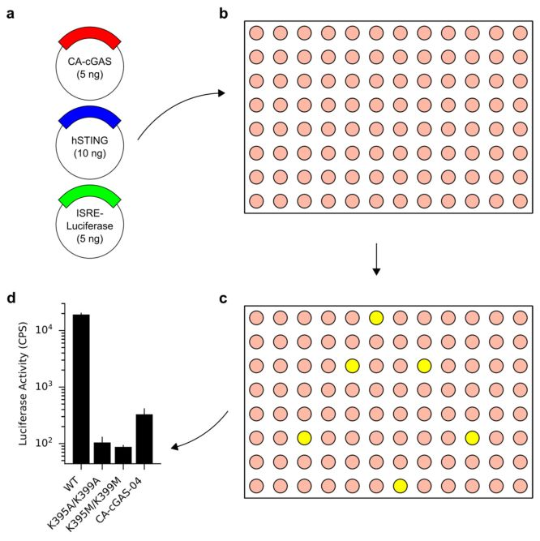
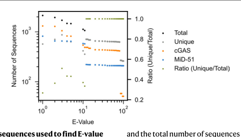
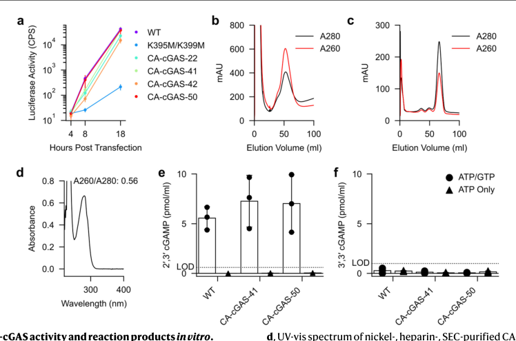
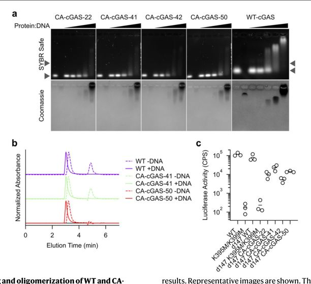
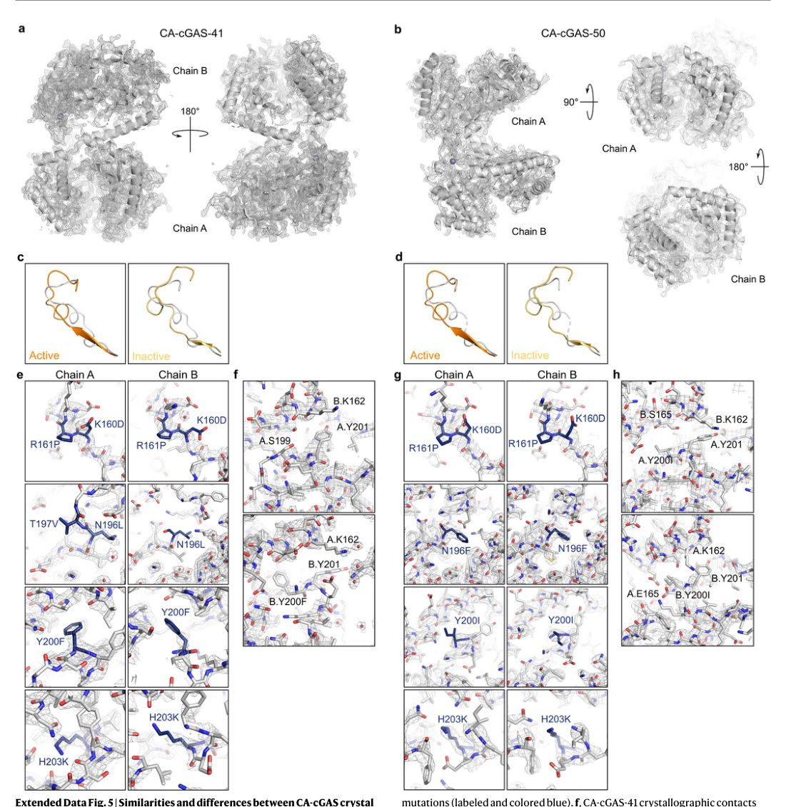
References
- Gao P. Cyclic [G(2′,5′)pA(3′,5′)p] is the metazoan second messenger produced by DNA-activated cyclic GMP-AMP synthase. Cell 2013
- Wu J. Cyclic GMP-AMP is an endogenous second messenger in innate immune signaling by cytosolic DNA. Science 2013
- Sun L, Wu J, Du F, Chen X, Chen Z. Cyclic GMP-AMP synthase is a cytosolic DNA sensor that activates the type I interferon pathway. Science 2013
- Ablasser A. cGAS produces a 29-59-linked cyclic dinucleotide second messenger that activates STING. Nature 2013
- Motwani M, Pesiridis S, Fitzgerald K. DNA sensing by the cGAS-STING pathway in health and disease. Nat. Rev. Genet 2019
- Decout A, Katz J, Venkatraman S, Ablasser A. The cGAS-STING pathway as a therapeutic target in inflammatory diseases. Nat. Rev. Immunol 2021
- Le Naour J, Zitvogel L, Galluzzi L, Vacchelli E, Kroemer G. Trial watch: STING agonists in cancer therapy. Oncoimmunology 2020
- Wu J, Zhao L, Hu H, Li W, Li Y. Agonists and inhibitors of the STING pathway: potential agents for immunotherapy. Med. Res. Rev 2020
- Larkin B. Cutting Edge: Activation of STING in T cells induces type I IFN responses and cell death. J. Immunol 2017
- Bulcha J, Wang Y, Ma H, Tai P, Gao G. Viral vector platforms within the gene therapy landscape. Signal Transduct. Target Ther 2021
- Buschmann M. Nanomaterial delivery systems for mRNA vaccines. Vaccines 2021
- Volkman H, Cambier S, Gray E, Stetson D. 2019
- Corrales L. Direct activation of STING in the tumor microenvironment leads to potent and systemic tumor regression and immunity. Cell Rep 2015
- Sivick K. Magnitude of therapeutic STING activation determines CD8+ T cell-mediated anti-tumor immunity. Cell Rep 2018
- Francica B. TNFα and radioresistant stromal cells are essential for therapeutic efficacy of cyclic dinucleotide STING agonists in nonimmunogenic tumors. Cancer Immunol. Res 2018
- Holleufer A. Two cGAS-like receptors induce antiviral immunity in Drosophila. Nature 2021
- Slavik K. cGAS-like receptors sense RNA and control 3′2′-cGAMP signalling in Drosophila. Nature 2021
- Hornung V, Hartmann R, Ablasser A, Hopfner K. OAS proteins and cGAS: unifying concepts in sensing and responding to cytosolic nucleic acids. Nat. Rev. Immunol 2014
- Civril F. Structural mechanism of cytosolic DNA sensing by cGAS. Nature 2013
- . doi:10.1038/s41594-022-00862-z
- Zhang X. The cytosolic DNA sensor cGAS forms an oligomeric complex with DNA and undergoes switch-like conformational changes in the activation loop. Cell Rep 2014
- Li X. Cyclic GMP-AMP synthase is activated by double-stranded DNA-induced oligomerization. Immunity 2013
- Zhou W. Structure of the human cGAS-DNA complex reveals enhanced control of immune surveillance. Cell 2018
- Andreeva L. cGAS senses long and HMGB/TFAM-bound U-turn DNA by forming protein-DNA ladders. Nature 2017
- Xie W. Human cGAS catalytic domain has an additional DNA-binding interface that enhances enzymatic activity and liquid-phase condensation. 2019
- Hall J. The catalytic mechanism of cyclic GMP-AMP synthase (cGAS) and implications for innate immunity and inhibition. Protein Sci 2017
- Huang P, Boyken S, Baker D. The coming of age of de novo protein design. Nature 2016
- Kuhlman B. Design of a novel globular protein fold with atomic-level accuracy. Science 2003
- Leaver-Fay A, Jacak R, Stranges P, Kuhlman B. A generic program for multistate protein design. PLoS ONE 2011
- Leaver-Fay A. ROSETTA3: an object-oriented software suite for the simulation and design of macromolecules. Methods Enzymol 2011
- Krissinel E, Henrick K. Secondary-structure matching (SSM), a new tool for fast protein structure alignment in three dimensions. Acta Crystallogr. D. Biol. Crystallogr 2004
- Richter V. Structural and functional analysis of mid51, a dynamin receptor required for mitochondrial fission. J. Cell Biol 2014
- Remmert M, Biegert A, Hauser A, Söding J. HHblits: lightning-fast iterative protein sequence searching by HMM-HMM alignment. Nat. Methods 2011
- Whiteley A. Bacterial cGAS-like enzymes synthesize diverse nucleotide signals. Nature 2019
- Kranzusch P, Lee A, Berger -, Doudna J. Structure of human cGAS reveals a conserved family of second-messenger enzymes in innate immunity. Cell Rep 2013
- Humphreys I. Computed structures of core eukaryotic protein complexes. Science 2021
- Tunyasuvunakool K. Highly accurate protein structure prediction for the human proteome. Nature 2021
- Du M, Chen Z. DNA-induced liquid phase condensation of cGAS activates innate immune signaling. Science 2018
- Lau Y. Discovery and engineering of enhanced SUMO protease enzymes. J. Biol. Chem 2018
- Ishikawa H, Ma Z, Barber G. STING regulates intracellular DNA-mediated, type I interferon-dependent innate immunity. Nature 2009
- Gall A. Autoimmunity initiates in nonhematopoietic cells and progresses via lymphocytes in an interferon-dependent autoimmune disease. Immunity 2012
- Snyder A. Intratumoral activation of the necroptotic pathway components RIPK1 and RIPK3 potentiates antitumor immunity. Sci. Immunol 2019
- Liu H. Nuclear cGAS suppresses DNA repair and promotes tumorigenesis. Nature 2018